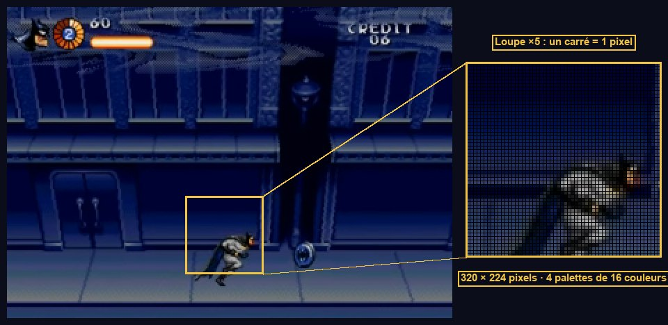

Fondations du projet Godot
Un projet qui « pense » comme une Mega Drive : 320×224 pixels, 60 images par seconde, une manette à trois boutons. Puis les briques réutilisables qui serviront à Batman, aux ennemis et aux boss.
De la Mega Drive à Godot
Avant d'écrire du code, il faut savoir à quoi correspond chaque pièce de la console dans Godot. Cette table reprend et corrige la matrice de l'ancienne doc A.
| Mega Drive (1995) | Rôle | Équivalent Godot 4.5 |
|---|---|---|
| Motorola 68000 à 7,67 MHz | Logique du jeu | GDScript |
| Interruption VBlank à 60 Hz (NTSC) | Le jeu avance d'un « pas » par image | _physics_process(delta) à 60 ticks/s |
| VDP : plans A et B (tuiles 8×8, défilement matériel) | Décors | TileMapLayer, Parallax2D, ou un plan « raster » maison (tome 06) |
| Table H-Scroll (un décalage par ligne) | Parallaxe et déformations ligne par ligne | Shader avec un tableau de 224 décalages (tome 06) |
| VSRAM (défilement vertical par colonnes de 16 px) | Rotations, ondulations verticales | Shader (non utilisé dans le niveau 1) |
| 80 sprites matériels, 20 par ligne | Personnages, projectiles | Sprite2D, AnimatedSprite2D |
| CRAM : 4 palettes de 16 couleurs, 9 bits | Couleurs, fondus, flashs | modulate, shaders de palette (tome 06) |
| Plan « Window » fixe | Interface | CanvasLayer (le HUD) |
| Z80 + YM2612 (FM) + PSG | Musique de Jesper Kyd, bruitages | AudioStreamPlayer + bus audio |
Configurer le projet

viewport conserve exactement cette grille. (vidéo 1:50)Crée un projet Godot 4.5 (moteur de rendu Compatibility ou Forward+, peu importe ici), puis règle les paramètres suivants dans Projet → Paramètres du projet (active « Paramètres avancés »). Voici l'extrait équivalent de project.godot :
| Réglage | Pourquoi |
|---|---|
| 320 × 224 | Mode H40 de la Mega Drive en NTSC : la résolution du jeu original. |
| Fenêtre 1280 × 896 | Exactement ×4 : chaque pixel du jeu devient un carré de 4×4. |
Stretch viewport + échelle integer | Le jeu est réellement rendu en 320×224, puis agrandi. Un sprite ne peut jamais être à mi-pixel, et un shader « ligne par ligne » voit exactement 224 lignes. Avec canvas_items (choix de l'ancienne doc B), l'image est rendue en grand et les effets par ligne deviennent faux. |
Filtre Nearest | Pas de lissage : pixels nets. |
| Snap au pixel | Les positions à virgule (caméra lissée, vitesses fractionnaires) sont arrondies à l'affichage, sans tremblement. |
| 60 ticks physiques | Un tick = une image Mega Drive. Les vitesses mesurées en px/image se convertissent directement. |
L'écran NTSC est en 4:3 ; 320×224 affiché en 4:3 donne des pixels légèrement plus hauts que larges. La plupart des remakes ignorent ce détail. Si tu veux le reproduire, garde l'échelle entière désactivée et utilise une fenêtre de 1280×960 : tu perds alors la netteté parfaite.
La boucle de jeu et les « pixels par image »
Un jeu est une boucle : lire les entrées → mettre à jour le monde → dessiner, recommencée en permanence. Sur Mega Drive, la mise à jour a lieu une fois par image (VBlank, 60 Hz), et toutes les vitesses s'expriment en pixels par image, souvent en virgule fixe 8.8.
Dans Godot, _physics_process(delta) est appelé à intervalle fixe (60 fois/s grâce à nos réglages) : c'est là qu'on met tout le gameplay. _process(delta) suit la fréquence d'affichage et sert aux effets purement visuels. On écrit les vitesses en px/s (px/image × 60) et on multiplie par delta : le code reste correct même si on change un jour la fréquence.
Les entrées : une manette à trois boutons
La manette Mega Drive a une croix, A, B, C et Start. D'après le manuel, A et C déclenchent l'attaque contextuelle (mêlée au contact, projectile à distance). On met le saut sur B. On crée des actions abstraites : le code ne parle jamais de touches, seulement d'actions.
| Action | Clavier (position physique) | Manette | Mega Drive |
|---|---|---|---|
move_left / move_right / move_up / move_down | Flèches ou W A S D (= Z Q S D sur AZERTY) | Croix + stick gauche | Croix |
attack | J et L | X et B (Xbox) | A et C |
jump | K et Espace | A (Xbox) | B |
start | Entrée | Start / Menu | Start |
Tu peux les saisir à la main dans Projet → Paramètres → Contrôles, ou exécuter une fois ce script d'éditeur (Fichier → Exécuter dans l'éditeur de script), puis recharger le projet :
L'arborescence du projet
Elle est fixée dès maintenant : tous les chemins res:// des tomes suivants s'y réfèrent.
res:// ├── autoload/ game.gd, scene_flow.gd, audio.gd (singletons) ├── core/ layers.gd, state.gd, state_machine.gd, health.gd, │ hitbox.gd, hurtbox.gd, pool.gd (briques génériques) ├── player/ player.tscn, player.gd, hero_data.gd, batman.tres, robin.tres, │ states/*.gd ├── weapons/ weapons.gd, weapon_data.gd, weapon_system.gd, projectile.tscn/.gd, │ data/batarang.tres, bolas.tres, shuriken.tres ├── pickups/ pickup.gd, weapon_pickup, skull_bomb, charge_pickup (.tscn/.gd) ├── enemies/ enemy.gd, clown, thug, gunner, propeller_head, balloon_mine, │ bomb, formation.gd, enemy_bullet.tscn ├── level/ camera_rig.gd, wave_arena.gd, wave_data.gd, breakable.gd, │ go_sign.tscn, test_room.tscn ├── fx/ fx.gd, explosion.tscn, palette_fx.tscn, raster_plane.gd, │ facade_raster.gd, fire.gd, hit_flash.gd, *.gdshader ├── bosses/ boss.gd, boss_arena.gd, harley_machine/, crane_harley/, joker_balloon/ ├── sections/ section.gd, s1_streets.tscn, s2_gem_expo.tscn, s3_convoy.tscn, │ s1/, s2/, s3/ (scripts propres à chaque section) ├── screens/ intro, title, options, player_select, continue, │ interlude.gd (batmobile, title_card, level_end) ├── ui/ hud.tscn, hud.gd, life_medallion.gd, charge_bar.gd ├── art/ audio/ fonts/ └── tools/ setup_inputs.gd, indexer.gd (scripts d'éditeur)
Les couches de collision

Chaque objet physique est sur certaines couches (collision_layer) et regarde certaines couches (collision_mask). Un batarang n'a pas besoin de tester les murs du décor ni les autres batarangs : bien régler les masques évite à la fois des bugs et des calculs inutiles.
| N° | Nom | Qui est dessus | Qui la regarde |
|---|---|---|---|
| 1 | monde | Sols, murs (StaticBody, TileMapLayer) | Corps du joueur et des ennemis, projectiles qui s'écrasent |
| 2 | plateformes | Balcon, caisses, plateaux de camions (collision « one-way ») | Corps du joueur et des ennemis |
| 3 | corps_joueur | CharacterBody2D de Batman | Zones des bonus, déclencheurs (arènes, boss, banque), prise du costaud, zone de chute |
| 4 | corps_ennemis | CharacterBody2D des ennemis | Personne dans le niveau 1 (couche réservée : les attaques visent la couche 6) |
| 5 | hurtbox_joueur | Hurtbox de Batman | Hitbox ennemies (coups, balles, bombes) |
| 6 | hurtbox_ennemis | Hurtbox des ennemis, des boss et des objets cassables | Hitbox du joueur (poing, projectiles) et sa zone MeleeSense (« un ennemi est-il à portée de poing ? ») |
| 7 | bonus | Zone de ramassage des objets | Personne : c'est la zone du bonus qui regarde la couche 3, pas l'inverse |
| 8 | rebords | Zones d'accroche sous le balcon | Sonde « mains » de Batman |
Pour s'en servir dans le code sans nombres magiques :
L'autoload Game : l'état de la partie
Certaines données doivent survivre aux changements de scène : score, vies, crédits, personnage choisi, arme en main. On les range dans un autoload, un nœud que Godot crée au démarrage et garde en vie. Dans Projet → Paramètres → Globals → Autoload, ajoute ce script sous le nom Game.
Les composants de base
Batman, un clown et la montgolfière du Joker ont tous de la vie, peuvent être touchés et peuvent frapper. Plutôt que d'écrire trois fois la même logique ou de créer une hiérarchie de classes géante, on fabrique de petits composants (des nœuds avec un seul rôle) qu'on assemble dans chaque scène. C'est l'approche de l'ancienne doc B, ici complétée pour que tout compile.
Health : la vie
Hitbox et Hurtbox : qui frappe, qui encaisse

La Hitbox est la zone qui fait mal (poing, batarang, bombe). La Hurtbox est la zone vulnérable (le corps). Les séparer du CollisionShape2D qui sert à marcher permet par exemple de rendre Batman invincible sans qu'il tombe à travers le sol.
On ne modifie pas monitoring ou le disabled d'une forme de collision pendant un signal de collision : on utilise set_deferred(). Sinon Godot affiche l'erreur « Function blocked during in/out signal ».
State et StateMachine : le cerveau
Un personnage est toujours dans un seul état à la fois (au sol, en l'air, suspendu, touché…). Chaque état a son propre script, avec enter() à l'entrée, exit() à la sortie et physics_update() à chaque tick. Un état demande lui-même à passer au suivant. On évite ainsi les forêts de if is_jumping and not is_hurt and ....
await owner.ready ?Dans Godot, les enfants sont prêts avant leur parent. Quand la machine à états démarre, les variables @onready de Batman ne sont pas encore remplies. Attendre le signal ready du propriétaire de la scène garantit que le premier enter() trouve tout en place. Chaque état récupère son personnage avec owner, le nœud racine de la scène.
Scène de test
Pour vérifier les fondations, crée res://level/test_room.tscn :
TestRoom (Node2D) ├── Floor (StaticBody2D) couche 1 « monde » │ ├── CollisionShape2D rectangle 320×16 en y = 208 │ └── ColorRect 320×16, gris : le sol visible ├── Balcony (StaticBody2D) couche 2 « plateformes » │ └── CollisionShape2D rectangle 200×8 en y = 112, One Way Collision = activé └── Camera2D
- La fenêtre s'ouvre en 1280×896, l'image est nette et pixelisée.
- Le moniteur de Godot (Débogueur → Moniteurs) affiche 60 ticks physiques par seconde.
- Les actions
move_*,jump,attacketstartexistent dans la carte des entrées. Gameest accessible depuis n'importe quel script :Game.add_score(100).- Les scripts de
res://core/se chargent sans erreur.